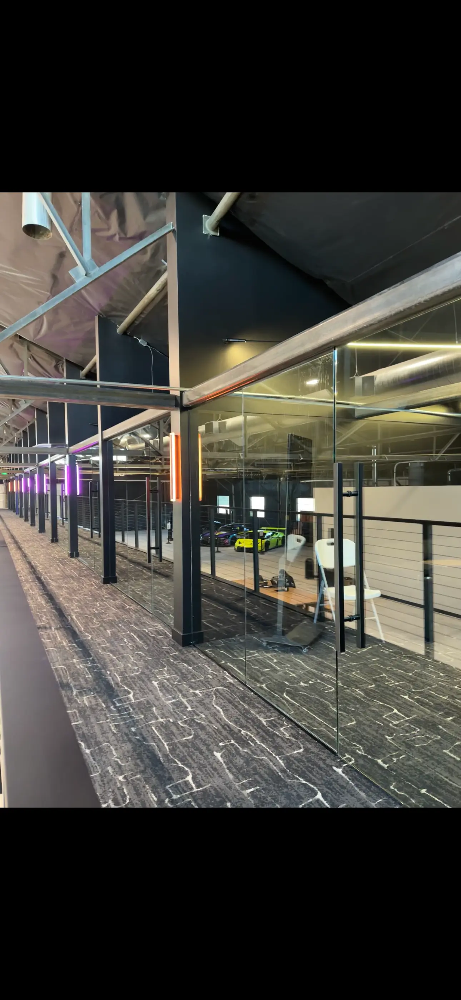
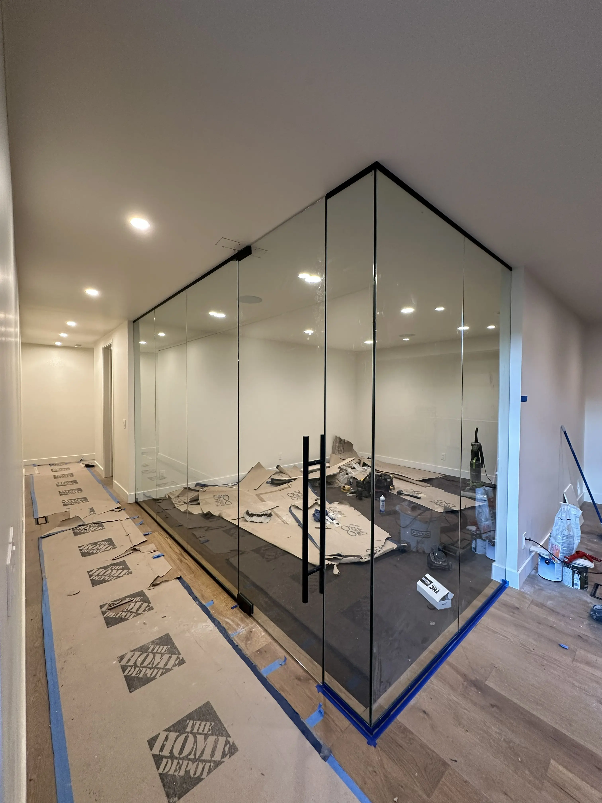
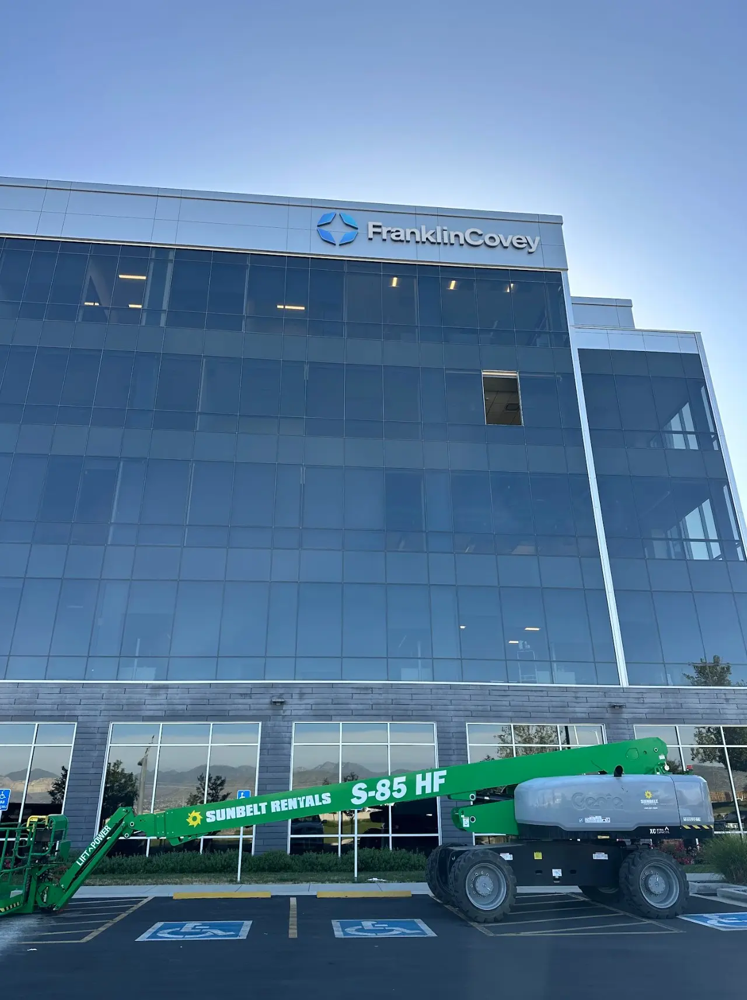
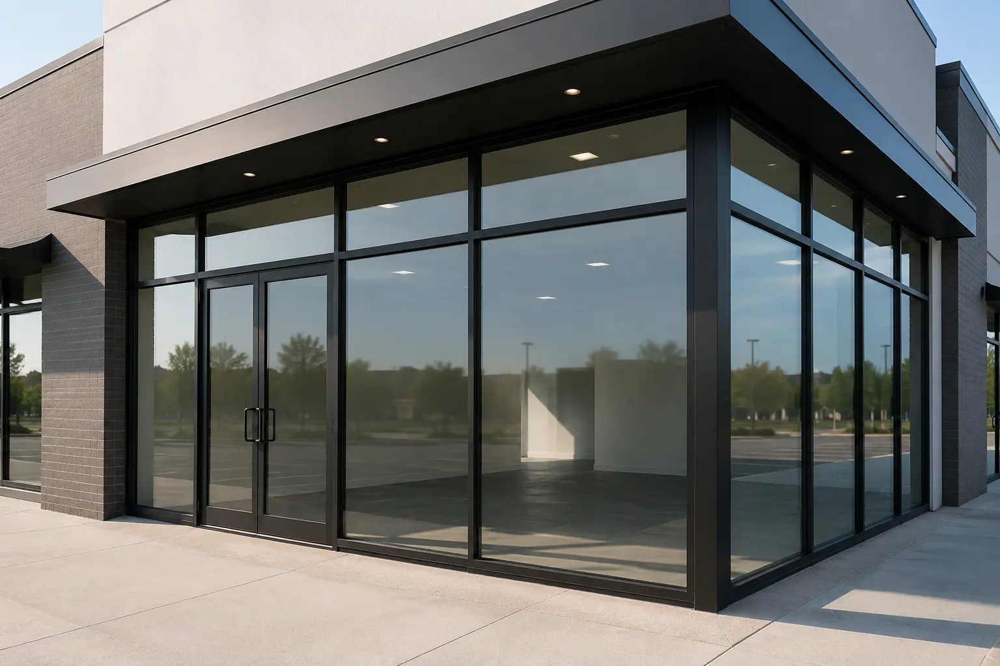
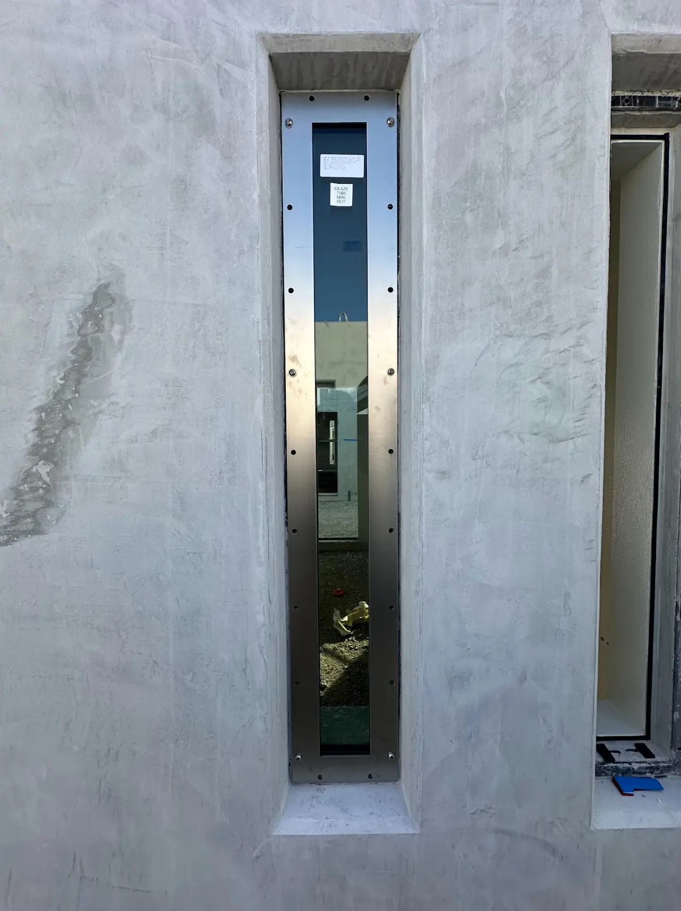
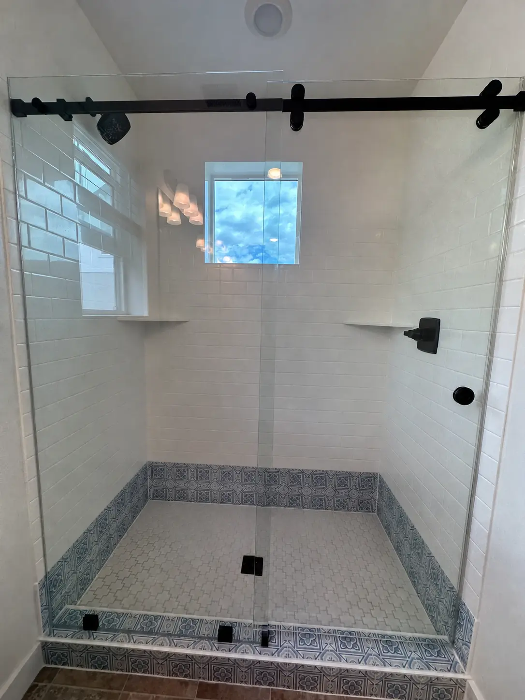
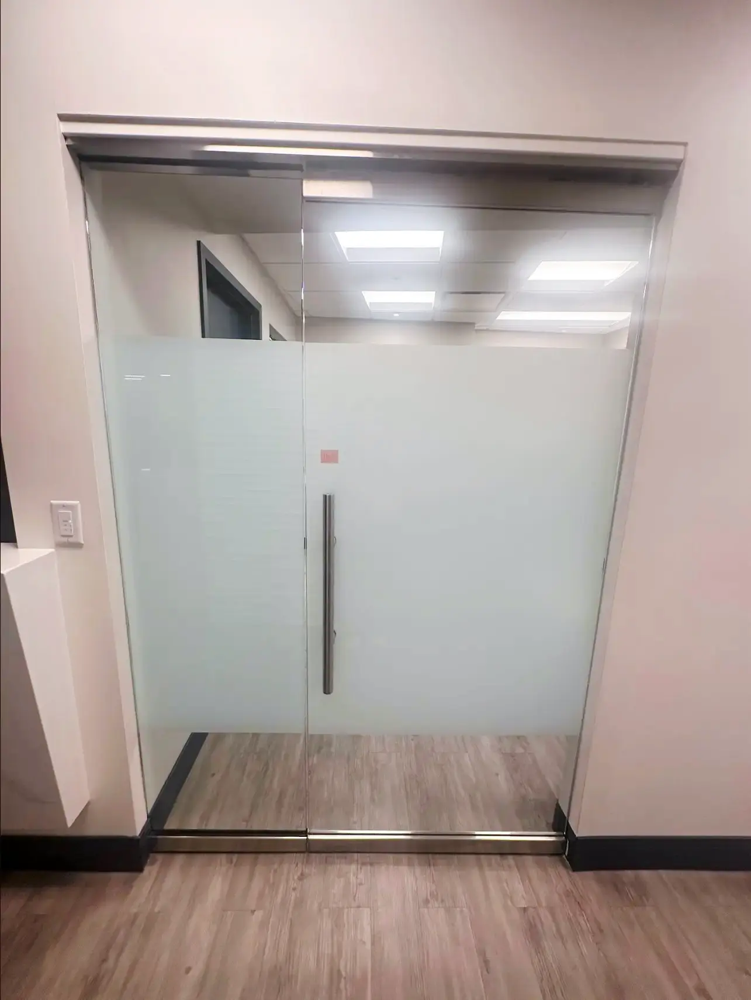

Selected Work
Glass in its architectural context.
A curated look at commercial systems, interior partitions, residential installations, and specialty glazing completed by Seidon Glass.






Your Project
Start a Conversation